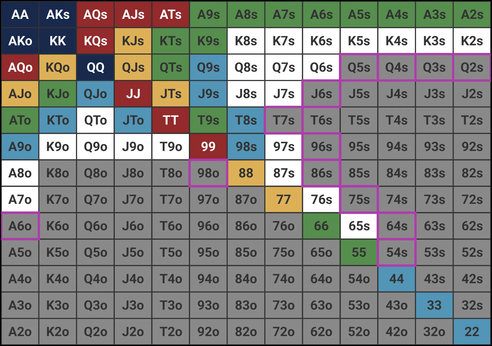

TenFour 6-Max NLH Fast Fold | 2026/03/15 ~
色がついているハンドだけが UTG からオープンしてよい手。グレーはフォールド。

| オープンにコール | 3betにコール | 4betにコール | |
|---|---|---|---|
| 払う額 | 2-3bb | 7-10bb | 15-20bb |
| 相手の強さ | 広い | かなり強い | AA/KK/AK中心 |
| KTo | ポジション有ればOK | フォールド一択 | 論外 |
| 88 | OK（セット狙い） | ギリギリ | 絶対フォールド |
| AQo | OK | フォールド | フォールド |
| AQs | OK | コール | フォールド |
相手が最初にレイズ（2-3bb）してきたのに乗っかる。
| ハンド | アクション | 理由 |
|---|---|---|
| QQ+, AKs | 3bet | コールではなく3bet |
| JJ, TT | コール | フラットコールで様子見 |
| 99, 88, 77 | コール | セット狙い。外れたら撤退 |
| AQs, AJs, KQs | コール | ポジション有るとき限定 |
| AQo | コール/フォールド | BTNならコール可 |
| KQo, KJo, KTo | フォールド | オフスーツは弱い |
| JTs, T9s | コール | ポジション有ればストレート/フラッシュ狙い |
| ハンド | アクション | 理由 |
|---|---|---|
| JJ+, AKs | 3bet | バリュー3bet |
| TT, 99 | コール | セット狙い |
| AKo, AQs | 3bet or コール | ポジション次第 |
| AJs, KQs, QJs | コール | スーテッドでポジション有るとき |
| AQo | コール | BTN/COから |
| KJo, KTo | フォールド | オフスーツは厳しい |
| ハンド | アクション | 理由 |
|---|---|---|
| TT+, AKs | 3bet | バリュー3bet |
| 99, 88, 77 | コール | セット狙い |
| AKo, AQs, AQo | 3bet or コール | 3bet寄り |
| AJs, ATs, KQs, KJs, QJs | コール | スーテッドブロードウェイ |
| JTs, T9s | コール | スーテッドコネクター |
| KJo, KTo | フォールド | まだオフスーツは厳しい |
| ハンド | アクション | 理由 |
|---|---|---|
| TT+, AKs, AKo | 3bet | バリュー3bet |
| AQs, AQo, AJs | 3bet | BTN相手ならバリュー |
| QJs, JTs, T9s | コール or 3bet | BBからならコール |
| KQo, KJo | コール | BTN相手ならオフスーツ可 |
| KTo | コール | BBからのみ。SBフォールド |
| 77以下ペア | コール | セット狙い |
| A9s-A2s | コール or 3bet | フラッシュ狙い / ブラフ3bet候補 |
| ハンド | アクション |
|---|---|
| QQ+, AKs, JJ, TT, AKo, AQs | 3bet |
| 99以下, KQs, AJs | 3bet or フォールド |
| それ以外 | フォールド |
自分がオープンレイズ → 相手にリレイズされた場面
| ハンド | アクション | 理由 |
|---|---|---|
| AA | 4bet | 最強。必ずレイズし返す |
| KK | 4bet | 迷わず4bet |
| 4bet | バリュー4betの下限 | |
| AKs | 4bet | スーテッドAKはバリュー4bet |
| AKo | 4bet or コール | ポジション有ればコール可 |
| JJ, TT | コール | コールして様子見 / セット狙い |
| AQs, KQs | コール | ポジション有るときだけ |
| 99 | コール/フォールド | ポジション有ればコール |
| A5s, A4s | 4bet（ブラフ） | Aブロッカー + スーテッド |
| KTo, 88以下 | フォールド | 完全にレンジ外 |
| QJo, KJo等 | フォールド | オフスーツは3betに弱い |
| ハンド | アクション | 理由 |
|---|---|---|
| AA, KK | 5bet オールイン | 最強。全額投入 |
| QQ, AKs | コール or 5bet | 相手次第 |
| AKo | コール | ギリギリ |
| JJ以下 | フォールド | 4betレンジはAA/KK/AK中心 |
| ハンド | アクション | 理由 |
|---|---|---|
| AA, KK, QQ, AKs | 3bet（バリュー） | 文句なし |
| AKo | 3bet or コール | ポジション有れば3bet |
| JJ, TT, AQs, KQs | コール | フラットコール |
| ブラフ3bet | ほぼなし | やるならA5sのみ |
| ハンド | アクション | 理由 |
|---|---|---|
| AA-JJ, AKs, AKo, AQs | 3bet（バリュー） | 必ず3bet |
| TT, KQs | 3bet or コール | どちらでも可 |
| A5s, A4s, A3s | 3bet（ブラフ） | Aブロッカー + スーテッド |
| KJs | 3bet or コール | BTNからならブラフ3betもあり |
| 99, 88 | コール | セット狙い |
| ハンド | アクション | 理由 |
|---|---|---|
| AA-TT, AKs-AQo, AJs, KQs | 3bet（バリュー） | 広めにバリュー |
| A5s-A2s | 3bet（ブラフ） | ブラフ3betの主力 |
| KJs, QJs, JTs, T9s | 3bet（ブラフ） | スーテッドコネクター |
| 99, 88 | 3bet or コール | どちらでも可 |
| ハンド | アクション | 理由 |
|---|---|---|
| AA-JJ, AKs, AKo, AQs | 3bet（バリュー） | バリュー |
| TT, 99 | 3bet or コール | 3bet寄り |
| A5s, A4s, A3s | 3bet（ブラフ） | ブラフ3bet |
| KTs+, QTs+, JTs | 3bet or コール | 広めに3bet可 |
| 88以下ペア | コール | セット狙い |
ブラフは「なんとなく」でやると大損する。条件が揃っているか確認してから。
| 評価 | ハンド | 理由 |
|---|---|---|
| ベスト | A5s, A4s, A3s | Aブロッカー + フラッシュ可能性 |
| 次点 | KJs, QJs, JTs, T9s | スーテッドコネクター |
| ダメ | KTo, Q9o, J8o等 | ブロッカーなし、ドローなし |
ブラフ4betはA5s, A4sのみ。他は上級者向け。
プリフロップでレイズした人がフロップでも続けてベットすること。
| ボード | CBet | 理由 |
|---|---|---|
| Aハイ（A-7-2等） | 打つべき | 相手はAがなければ降りやすい |
| Kハイ（K-8-3等） | 打つべき | レイザー有利のボード |
| ドライ（K-7-2 バラバラ） | 打つべき | 相手にドローがなく粘る理由がない |
| ペアボード（K-K-5等） | 打つべき | 相手がK持ってる確率が低い |
| ウェット（J♠T♠8♥等） | 打たない方がよい | ドローが多く相手がコールしやすい |
| ロー（7-5-3等） | やや慎重に | コール側のレンジにフィットしやすい |
| ボード | サイズ | 理由 |
|---|---|---|
| ドライボード | ポットの25-33% | 小さくてOK。弱い手はフォールドする |
| ウェットボード | ポットの50-75% | ドロー持ちに正しいオッズを与えない |
例外: フラッシュ/ストレート完成カードが落ちて持っているフリができるとき